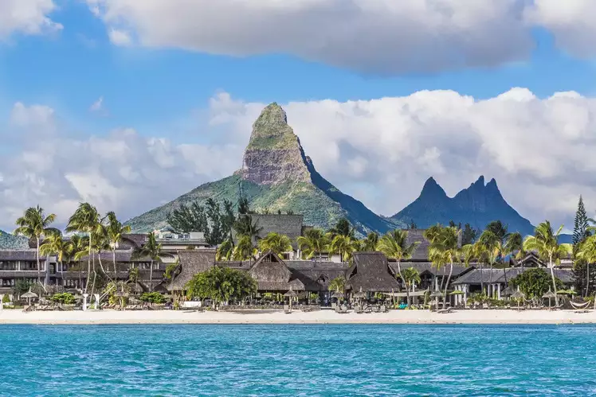

|
मारीशस (Mauritius) हिंद महासागर में स्थित एक छोटा सा द्वीप राष्ट्र है, जो अपनी प्राकृतिक सुंदरता, शांत वातावरण और विविध संस्कृति के लिए प्रसिद्ध है। यह अफ्रीका के दक्षिण-पूर्व में स्थित है और इसकी राजधानी पोर्ट लुई है। मारीशस का कुल क्षेत्रफल लगभग 2,040 वर्ग किलोमीटर है, और इसकी आबादी लगभग 13 लाख है।
मारीशस को "पर्यटकों का स्वर्ग" कहा जाता है क्योंकि यहां खूबसूरत समुद्र तट, हरे-भरे पहाड़, और समृद्ध वन्य जीवन पाए जाते हैं। इसके अलावा, यह देश आर्थिक रूप से स्थिर है और चीनी उत्पादन, पर्यटन और वित्तीय सेवाओं में प्रमुख भूमिका निभाता है। मारीशस और भारत के बीच ऐतिहासिक, सांस्कृतिक और भाषाई संबंध बहुत गहरे हैं। यहां कुछ प्रमुख समानताएं हैं: 1. सांस्कृतिक प्रभाव मारीशस की जनसंख्या का एक बड़ा हिस्सा भारतीय मूल के लोगों का है, जिन्हें 19वीं सदी में गन्ने के खेतों में काम करने के लिए लाया गया था। भारतीय प्रवासियों ने मारीशस की संस्कृति, भोजन, संगीत और त्योहारों पर गहरा प्रभाव डाला है। दिवाली, होली और गणेश चतुर्थी जैसे भारतीय त्योहार मारीशस में बड़े धूमधाम से मनाए जाते हैं। 2. भाषा मारीशस में भारतीय भाषाओं का महत्वपूर्ण प्रभाव है। हिंदी, भोजपुरी, और तमिल जैसी भाषाएं आज भी वहां बोली जाती हैं। हालांकि मारीशस की आधिकारिक भाषा अंग्रेजी है, लेकिन लोग आमतौर पर क्रियोल और फ्रेंच के साथ भारतीय भाषाओं का भी उपयोग करते हैं। 3. धार्मिक समानता मारीशस की जनसंख्या में हिंदू धर्म का बड़ा हिस्सा है, जो भारतीय मूल के लोगों की वजह से है। यहां हिंदू मंदिर, मस्जिद और गिरजाघर एक साथ देखने को मिलते हैं, जो धार्मिक सहिष्णुता का प्रतीक हैं। 4. खानपान मारीशस का भोजन भारतीय भोजन से प्रेरित है। यहां मसालेदार करी, चपाती, समोसा और दाल जैसे व्यंजन लोकप्रिय हैं। इसके साथ ही समुद्री भोजन भी मारीशस की खासियत है। 5. लोकप्रिय पर्यटन स्थल मारीशस और भारत दोनों ही पर्यटकों के लिए प्रमुख आकर्षण हैं। जैसे भारत में गोवा, केरल और अंडमान द्वीप समूह समुद्र तटों के लिए प्रसिद्ध हैं, वैसे ही मारीशस अपने सफेद रेत के समुद्र तटों और नीले पानी के लिए जाना जाता है। 6. फिल्म शूटिंग का स्थान > मारीशस भारतीय फिल्म इंडस्ट्री के लिए भी एक पसंदीदा स्थान है। कई बॉलीवुड फिल्मों की शूटिंग मारीशस के सुंदर स्थानों पर हुई है, जिससे यह भारतीय दर्शकों के बीच और अधिक लोकप्रिय हो गया है। निष्कर्ष मारीशस और भारत के बीच ऐतिहासिक और सांस्कृतिक संबंधों की एक मजबूत कड़ी है। मारीशस एक ऐसा देश है, जहां भारतीय संस्कृति का प्रभाव स्पष्ट रूप से देखा जा सकता है। यह दोनों देशों के बीच गहरे संबंधों और मैत्रीपूर्ण संबंधों का प्रतीक है। मारीशस न केवल प्राकृतिक सुंदरता के लिए प्रसिद्ध है, बल्कि यह विभिन्न संस्कृतियों और धर्मों के मेल का एक बेहतरीन उदाहरण भी है। |
 |